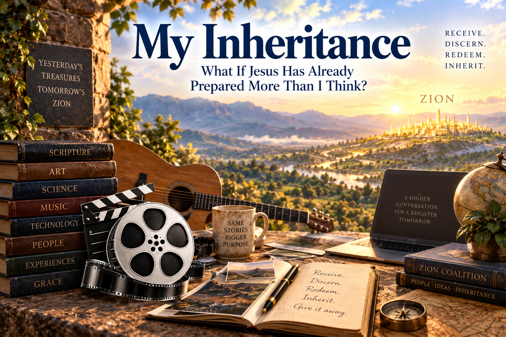

My Inheritance
What If Jesus Has Already Prepared More Than I Think?
Something keeps happening as I walk farther across the Inference Bridge.
Jesus seems to be changing one of my verbs.
For years, when I thought about Zion, the dominant verb in my head was:
BUILD.
Build Zion.
Create something.
Do something.
Produce something.
Figure something out.
Work harder.
Carry the burden.
But lately I sense Jesus introducing another verb—one that is strangely harder for me to believe:
RECEIVE.
Maybe Zion isn't only something Jesus wants me to help build.
Maybe Zion is also something He wants me to inherit.
And maybe an astonishing amount of my inheritance has already been prepared.
Greg, look around.
I imagine Jesus saying:
“Greg, look around.
You keep looking at what remains to be done. I want you to start noticing what has already been done.”
That is a very different way of seeing the world.
What if I don't have to manufacture everything I need?
What if Jesus has been preparing things for me through other people my entire life?
And before my life?
And before their lives?
What if some of the things Jesus wants me to receive were set in motion decades, centuries, even millennia before I arrived?
That would mean my inheritance is enormous.
And mostly unearned.
Which may be precisely why I have trouble receiving it.
The Promised Land was already there.
Here's something obvious that I somehow haven't thought much about:
Israel did not manufacture the Promised Land.
They didn't cross the Jordan carrying bags of dirt and say:
“Okay. Let's build a country.”
There was already a land.
There were already hills.
There were already valleys.
There were already fields.
There were already vineyards.
There were already wells.
There were already cities.
Israel had work to do, certainly.
But the fundamental posture was not:
Create a Promised Land from nothing.
It was:
Enter. Receive. Inhabit.
Inheritance.
Maybe that distinction matters.
Greg, you are not the beginning of the story.
That may be one of the things Jesus is trying to get through my thick skull.
I tend to experience my calling from inside my own little movie.
Naturally.
I'm Greg.
The camera is mounted behind Greg's eyes.
So when Jesus gives me an idea, I can easily imagine that the story begins when I notice the idea.
But what if that's almost never true?
Maybe Jesus has been working on the thing long before Greg enters the scene.
Maybe Greg arrives in Act Seven and mistakenly thinks he's watching Act One.
That fits something Jesus has already been teaching me through Jesus TV and My Head Makes Movies:
Sometimes I don't understand a scene because the scene is incomprehensible.
Sometimes I don't understand it because I haven't seen the backstory yet.
Maybe inheritance is backstory.
Consider one tiny example: “November Rain.”
Suppose, just for purposes of exploring the inference, that Jesus really did wrought upon Axl Rose and others involved in creating “November Rain.”
Then decades later Greg encounters the song.
Eventually Greg and Jesus redeem it as “Christ Now Reign.”
From Greg's immediate perspective, it might look like:
Greg found song → Greg redeemed song.
But widen the camera.
Suddenly the story might look more like:
Jesus → people → experiences → musical traditions → instruments → technology → Axl Rose → Guns N' Roses → “November Rain” → decades of cultural transmission → Greg → Jesus and Greg → “Christ Now Reign.”
Whoa.
Greg shows up near the end of an enormous supply chain.
And then I say:
“Look what I made!”
That's funny.
Maybe Jesus says:
“Yes, Greg. You participated.
But look at how many people carried that thing to you.”
Inheritance.
Maybe Axl Rose carried part of my burden.
That's one of the stranger possibilities Jesus seems to be asking me to consider.
What if people I have never met have already done pieces of work that I otherwise would have had to do?
A songwriter found the melody.
An engineer invented the microphone.
Someone developed magnetic recording.
Someone else developed digital audio.
Somebody built a guitar.
Somebody learned to play it.
Someone wrote software.
Someone built the internet.
Someone uploaded a video.
Someone preserved a scripture.
Someone translated a book.
Someone built a road.
Someone taught Greg to read.
Someone taught Greg sociology.
Someone developed HTML.
Someone built GitHub.
Someone created an AI language model.
Someone grew my food.
Someone generated my electricity.
Someone made my mattress.
Someone built my house.
Someone wrote a hymn.
Someone raised a child who eventually helped me.
Millions upon millions of people carrying tiny pieces of one another's burdens.
Mostly unwittingly.
And perhaps Jesus says:
“Greg, you keep asking Me how you are supposed to build Zion.
Look around you.
Do you see how much building has already happened?”
Egypt had treasure.
This is where My Exodus changes the way I see Babylon.
Israel didn't leave Egypt empty-handed.
They carried treasure out.
That suggests a possibility I find increasingly interesting:
Maybe escaping Babylon doesn't necessarily mean throwing Babylon into the garbage.
Maybe it means learning to discern what can be carried out.
Music.
Technology.
Art.
Science.
Scholarship.
Psychology.
Sociology.
Movies.
The internet.
AI.
Architecture.
Stories.
Comedy.
Tools.
Ideas.
Even cultural forms that weren't created with Zion remotely in mind.
Perhaps the question isn't simply:
“Did Babylon make this?”
Perhaps another question is:
“Jesus, what can this become?”
That's a Redeemer question.
And if Jesus really is the Redeemer of the world, I probably shouldn't be shocked if His redemption extends farther than I have generally supposed.
Wilderness had manna.
Then comes another form of inheritance.
Manna.
Israel didn't invent it.
They didn't manufacture it.
They didn't earn it through superior agricultural productivity.
They woke up.
They looked at the ground.
Provision.
I keep coming back to that.
Maybe Jesus is trying to teach me a spiritual posture:
Wake up.
Look around.
Notice what is already here.
Receive today's portion.
Maybe I keep praying:
“Jesus, give me what I need to build Zion.”
And perhaps sometimes Jesus responds:
“Greg, open your eyes. You're standing on it.”
The widow and Solomon belong in the same world.
This connects with something else Jesus has been stretching in me.
The Widow's Mite and the Treasures of Solomon do not have to cancel each other out.
One teaches me that almost nothing may be enough.
The other teaches me that abundance can also exist.
Nano-Marathon doesn't destroy Marathon.
One-page book doesn't destroy thousand-page book.
Receiving doesn't destroy working.
Rest doesn't destroy labor.
Inheritance doesn't destroy creation.
Jesus may simply be increasing my options.
Maybe sometimes He says:
“Greg, make something.”
Sometimes:
“Greg, work.”
Sometimes:
“Greg, wait.”
Sometimes:
“Greg, receive.”
Sometimes:
“Greg, somebody already made that. Use theirs.”
That last possibility can be wonderfully restful.
Inheritance changes my relationship with rest.
This may be one of the most personally important implications.
If Zion depends primarily upon Greg's output, then Greg had better keep producing.
There is always another essay.
Another webpage.
Another song.
Another idea.
Another project.
Another thing to fix.
Another thing to understand.
Another plank.
But if Jesus has been preparing Zion for centuries through millions of people, then Greg's role becomes smaller.
Not meaningless.
Smaller.
And that's good news.
Maybe I am not the contractor responsible for the entire city.
Maybe I'm an heir being shown around the property.
“Greg, look at this.”
“Whoa. Who built that?”
“Somebody else.”
“When?”
“Before you got here.”
“For me?”
“For everybody who can use it.”
“Oh.”
Maybe that is part of finding strength to rest.
But inheritance still requires discernment.
There is an obvious danger here.
If I start imagining everything as inheritance, I could easily stop inspecting things.
That would violate one of the central rules of the Inference Bridge:
Every plank remains inspectable.
Egypt contains treasure.
Egypt also contains idols.
The wilderness contains manna.
It also contains things that can kill you.
Culture contains beauty.
It also contains garbage.
My own mind contains insight.
It also contains error.
So receive cannot stand alone.
Maybe that's why the sequence Jesus has been giving me feels increasingly important:
Receive.
Discern.
Redeem.
Inherit.
Receiving does not mean swallowing everything.
Discernment asks:
What is this?
Where does it point me?
What does it do inside me?
Does it bring me closer to Jesus or farther away?
What should be kept?
What should be changed?
What should be left in Egypt?
Inheritance may need to be redeemed.
And this may be where my hundreds of redeemed classic-rock songs become a kind of laboratory.
I don't necessarily receive the artifact exactly as I found it.
Sometimes I do.
Sometimes something beautiful simply needs to be treasured.
But sometimes I receive something and then Jesus and I work on it.
We turn it.
Reframe it.
Rename it.
Recontextualize it.
Put MORE Jesus into it.
The thing isn't destroyed.
It is fulfilled.
Born again.
That's what I have been doing with songs.
But maybe songs are only the obvious example.
What else can be born again?
A pillow.
A shower.
A nap.
Bread.
Water.
A room.
A movie.
A website.
A smartphone.
A computer.
A life.
Maybe My Jesus-Greg WORLD is substantially an inheritance workshop.
Things arrive from the ordinary world.
Jesus and Greg ask what they might become.
Maybe Zion is hiding in plain sight.
This possibility fascinates me.
What if I have been imagining Zion primarily as a future construction project when Jesus wants me also to see it as a present recognition problem?
Maybe pieces of Zion are already everywhere.
Not finished Zion.
Not purified Zion.
Not the fulness.
Pieces.
Seeds.
Raw materials.
Treasures sitting in Egypt.
Manna lying on the ground.
Vineyards I didn't plant.
Wells I didn't dig.
Songs I didn't write.
Technologies I didn't invent.
Ideas I didn't originate.
People I didn't train.
Love I didn't initiate.
Grace I didn't earn.
And perhaps part of developing eyes to see is learning to recognize these things.
That would make Zion simultaneously:
something coming,
something being built,
something being redeemed,
and
something already here waiting to be received.
Greg, stop acting like an orphan.
Maybe that is the strongest way I can imagine Jesus saying it.
“Greg, you keep behaving as though everything depends upon what you can scrape together yourself.
But you are an heir.
An heir doesn't create the inheritance.
An heir receives it.”
That doesn't mean entitlement.
It doesn't mean everything I want belongs to me.
It doesn't mean I can claim whatever I imagine Jesus has promised.
It means something much more basic:
If I really believe I am a child of God and joint-heir with Christ, then perhaps I should at least explore what inheritance means.
Maybe I should expect that God has prepared things I didn't earn.
Grace itself already teaches that.
Jesus Christ is not my accomplishment.
Resurrection is not my accomplishment.
Scripture is not my accomplishment.
The earth is not my accomplishment.
Love is not my accomplishment.
My next breath is not my accomplishment.
Maybe inheritance has been surrounding me all along.
The Promised Land may not be a place I finally reach.
Perhaps it is also a way of seeing.
Maybe I don't wake up one morning, cross a final bridge, and announce:
“I have arrived in Zion.”
Maybe entering the Promised Land happens partly whenever Jesus helps me recognize something He has already prepared and teaches me how to receive it.
A song.
A person.
An idea.
A meal.
A room.
A scripture.
A technology.
A moment of rest.
A weakness.
Even an apparent obstacle.
Maybe inheritance is not merely at the end of My Exodus.
Maybe inheritance has been appearing all along the road.
Egypt had treasure.
The wilderness had manna.
The Promised Land had vineyards.
Different places.
Same lesson:
Greg, I went ahead of you.
Maybe that's the paradigm shift.
And suddenly I wonder whether this is the huge belief Jesus has been preparing me to consider on the Inference Bridge.
Maybe the startling belief isn't simply:
Jesus works through more people than I previously imagined.
Maybe that's one plank.
Perhaps the larger implication is:
If Jesus has been working through everyone—wrought upon differently, line upon line, generation after generation—then the world may contain an almost incomprehensible inheritance of partially prepared Zion material.
And perhaps my job is not to carry all of Zion on my back.
Maybe Jesus is teaching me to recognize what He has already wrought.
Receive it.
Discern it.
Redeem what needs redeeming.
Treasure what is already lovely, of good report, and praiseworthy.
Add whatever small thing Jesus asks Greg to add.
Then pass it along.
Someone else may inherit what Jesus and Greg leave behind.
And maybe that's how Zion has been coming all along.
Not one heroic builder.
Millions of people carrying pieces.
Generation handing something to generation.
People who know what they're doing.
People who don't.
Saints.
Gentiles.
Believers.
Unbelievers.
Artists.
Scientists.
Mothers.
Carpenters.
Programmers.
Musicians.
Axl Rose.
Greg.
Everybody wrought upon differently.
And Jesus, somehow, working farther upstream than I can see.
Maybe that is why the burden can be light.
Maybe Jesus isn't asking me to create His world.
Maybe He's teaching me how to receive the world He has been preparing—
and then, with Him,
help a little piece of it be born again.
Receive.
Discern.
Redeem.
Inherit.
And then perhaps:
Give it away.
Because somebody coming after me may need the treasure Jesus placed in my hands today.